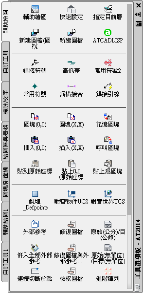
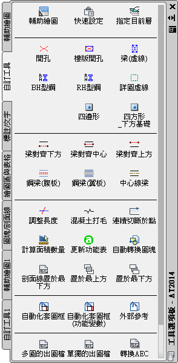
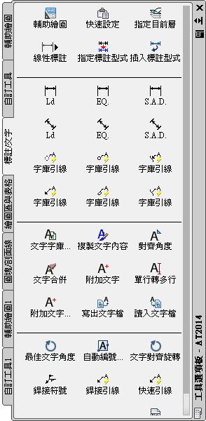

關於工具選項板的操作使用，如果你願意使用你會發現AutoCAD不再是單純的AutoCAD，它可幫你提昇工作效率呢!歡迎一起研究討論喔~
請先建立新的選項板來做測試，並使用以下四種方式來建立工具:
一、直接拖曳:
可以從圖面直接拖曳物件到工具選項板，來建立工具。
您可以拖曳下列任何物件到工具選項板 (一次拖曳一個物件)，來建立工具：
．幾何物件，例如線、圓以及聚合線。
．標註
．圖塊
．剖面線
．實面填實
．漸層填實
．點陣式影像
．外部參考 (xref)
二、設計中心(Ctrl+2)拖曳:
1.將圖面、圖塊與剖面線從設計中心拖曳到工具選項板上。
將加入到工具選項板中的圖面拖曳到另一個圖面時，這些圖面將作為圖塊插入。
2.在設計中心樹狀檢視中的資料夾、圖檔或圖塊上按一下滑鼠右鍵，
然後在快顯功能表上按一下「新建工具選項板」，從而建立具有預決定內容的工具選項板標籤。
三、使用「剪下」、「複製」與「貼上」可將一個「工具選項板」中的「工具」，移動或複製到另一個「選項板」中。
四、使用「自訂」對話方塊，將指令拖曳到工具選項板，就像您將它們加入工具列一樣。
PS:1.將工具放到工具選項板上之後，可以變更其物件性質(變更圖塊的插入比例或剖面線樣式的角度)。
2.工具選項板設定值會與您的個案設定(*.arg)一起儲存。
3.可以將工具選項板作為工具選項板檔匯出或匯入來儲存與共用工具選項板，提供另一台電腦使用。
工具選項板檔的副檔名為 .xtp。
4.工具選項板僅能在建立它的 AutoCAD 版本中使用。
也就是說你不能使用在 AutoCAD 2005 的 AutoCAD 2006 中建立的工具選項板。
■影片說明：開啟「設計中心」，找到「圖塊資料夾」位置，再建立「圖塊」工具選項板，插入圖塊時可以透過「設計中心」及「工具選項板」二種方式。
■影片說明：開啟「設計中心」，建立「圖塊」工具選項板，最後新增自訂「選項板群組」，把常用的選項板顯示，有利於繪圖工作使用。
■影片說明：開啟「工具選項板」，最後新增自訂「選項板群組」，僅顯示需要的選項板，再來可以自訂「工具按鈕」。
2013-09-06補充：
嘿嘿...除了插入圖塊，其實還有很多好用的～
只要會「功能表語法」及「巨集語法」，還可以製作很多工具按鈕喔～
我自己工作用的「外掛程式」不是使用「工具列」，而是全部掛在「工具選項板」裡！



※官網說明：
˙工具選項板上的指令工具 — 直接從使用預先指定工具性質的工具選項板啟動任一 AutoCAD 指令，可最小化工具列並最大化螢幕空間。
˙內容工具 — 直接從圖面將多種預先設定了性質的內容 (外部參考、圖塊、影像等) 拖至工具選項板，可節省建立與目前圖面一致的工具所需的時間。
˙工具選項板群組 — 將工具選項板組織成邏輯群組，可增強易用性、節省時間，且無需多佔用螢幕空間。
˙工程符號 — 擴充後的選項包括新的常用工程符號，有助於您節省時間、減少錯誤。
資料來源:Autodesk - 台灣歐特克網站